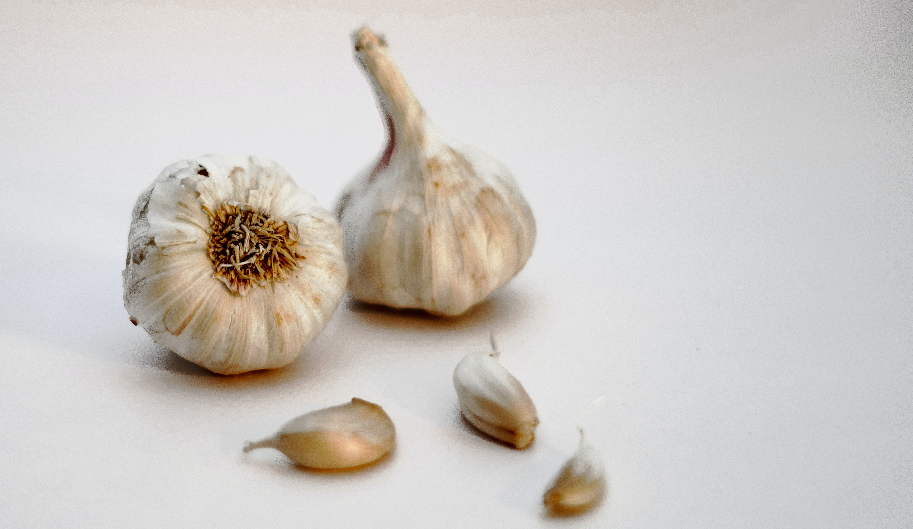

Garlic

Common Name: Garlic
Genus Species: Allium sativum
Family: Alliaceae
Origin: Himilayas, Siberia
Cultivation: Widely around the world
Description: Garlic is the name given to the leek (herb) with gar (spear) shaped leaves.
Its Latin name Allium sativum is derived from al = burning, sativum = harvested. The
plant may have arisen as a wild variant (“ramson”) in Siberia, but it has spread
world-wide, and is harvested in China, India, Gilroy in California, and in many other
places. As a food, it was favored by the Hebrews in biblical Egypt, and it is now
beloved in both homespun and gourmet cooking everywhere. Garlic has had a long-held
reputation as a medicine, and it was regarded by the popular 17th century British
herbalist, Culpeper, as the “poor man’s treacle”, implying that it had value as an
antidote to poisons and as a panacea for illnesses. Chicago is named after the Indian
term for the place where the wild garlic grows. Garlic is so widely grown that it cannot
be regarded as an exotic plant. Nevertheless, it is generally thought of as a spice
because of its remarkable pungent aroma, and its value for culinary and medical uses.
William Harvey published his revolutionary book on the Motion of the Blood in 1628; he
was impressed with an issue that still remains a concern: the presence of garlic’s smell
on the breath following its consumption. However, Harvey was more impressed that a folk
remedy for colds called for garlic in the shoe: the fact that this therapy led to the
smell of garlic on the breath was noted by him as additional evidence that the blood
circulates in the body. The other well-known connection between garlic and blood was the
herb’s traditional property of repelling vampires.
Recipes that Use Garlic: